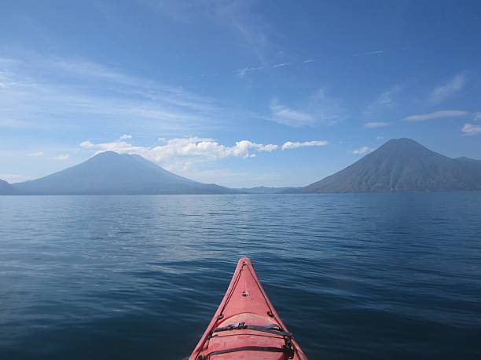
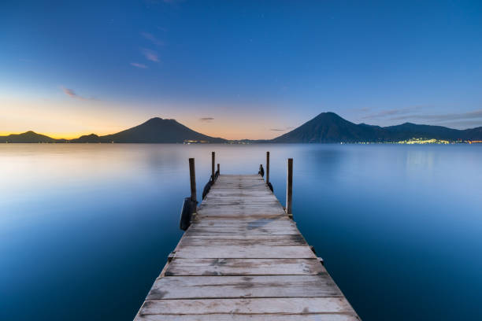
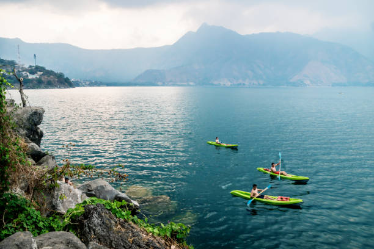
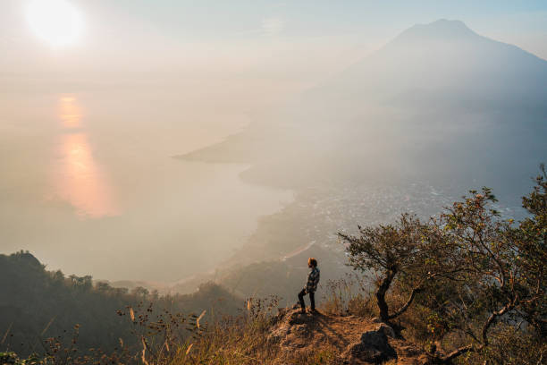

Bienvenidos a esta pagina donde podran encontrar informacion sobre la excursion al Lago de Atitlan
| Indice | Descripcion | Imagenes de Referencia | Itinerario de la excursion | Actividades |
|---|
| INDICE |
|
| DESCRIPCION |
Lago de AtitlanUbicación: Guatemala, Solola Descripción: El lago de Atitlan es un lago situado en el altiplano guatemalteco, en el departamento de Solola. es considerado uno de los lagos mas bellos del mundo y es un lugar turistico popular debido a su impresionante paisaje, rodeado de volcanes y pueblos pintorescos. El lago tiene una profundidad maxima de aproximadamente 340 metros y una superficie de alrededor de 130 km². Ademas, es hogar de diversas especies de flora y faunam asi como de comunidades indigenas que mantienen vivas sus tradiciones y cultura. |
| IMAGENES DE REFERENCIA | |||
|
 |
 |
 |
 |
| ITINERARIO DE LA EXCURSION | |||
| Fecha | Hora | Actividad | Lugar |
|---|---|---|---|
| 10/08/26 | 7:00 AM | Salida | Ciudad |
| 10/08/26 | 10:00 AM | Llegada | Panajachel |
| 10/08/26 | 11:00 AM | Recorrido en lancha | Lago |
| 10/08/26 | 1:00 PM | Almuerzo | Restaurante |
| 10/08/26 | 3:00 PM | Visita a San Juan | San Juan |
| 10/08/26 | 6:00 PM | Regreso | Ciudad |
| ACTIVIDADES | |||
|
|||